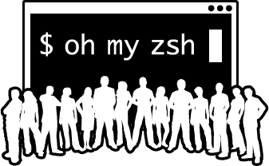

Tuner son shell avec oh-my-zsh
Installation de zsh et oh-my-zsh
sudo apt update && sudo apt -yq upgrade && sudo apt -yq install git zshsh -c "$(wget -O- https://raw.githubusercontent.com/ohmyzsh/ohmyzsh/master/tools/install.sh)"
`Looking for an existing zsh config...
Using the Oh My Zsh template file and adding it to ~/.zshrc.
Time to change your default shell to zsh:
Do you want to change your default shell to zsh? [Y/n] Y
Changing the shell...
Mot de passe :
Shell successfully changed to '/usr/bin/zsh'.
__ __
____ / /_ ____ ___ __ __ ____ _____/ /_
/ __ \/ __ \ / __ `__ \/ / / / /_ / / ___/ __ \
/ /_/ / / / / / / / / / / /_/ / / /_(__ ) / / /
\____/_/ /_/ /_/ /_/ /_/\__, / /___/____/_/ /_/
/____/ ....is now installed!
Before you scream Oh My Zsh! please look over the ~/.zshrc file to select plugins, themes, and options.
• Follow us on Twitter: https://twitter.com/ohmyzsh
• Join our Discord server: https://discord.gg/ohmyzsh
• Get stickers, shirts, coffee mugs and other swag: https://shop.planetargon.com/collections/oh-my-zsh
➜ ~
- Il y a plein de petites améliorations comme celles ci:
- Complétions de chemins et navigation arrière
➜ ~ cd /u/lo/sh
Si le chemin est unique, en appuyant sur TAB vous obtiendez ceci:
➜ ~ cd /usr/local/share
Au lieu de taper cd ../../ pour remonter d'un répertoire, il suffit de ..
➜ share ..
➜ local ..
➜ /usr
- Remplacement des variables
TAB permet aussi de remplacer toutes les variables par leur valeur.
➜ ~ ${HOME}
TAB
➜ ~ /home/ordinatous
- Historique de commande exécuté
La flèche du haut permet de remonter dans l’historique de commande, avec
oh-my-zsh , il suffit de taper par exemple : sshflèche du haut pour
retrouver vos dernière commande ssh : super pratique.
Amélioration avec powerlevel10k
powerlevel10k est véritablement très complet et je vous recommande d’aller sur sur le dépot du projet , il serait difficile d’en faire complétement le tour ici.
- Cloner le dépot du projet:
git clone --depth=1 https://github.com/romkatv/powerlevel10k.git ${ZSH_CUSTOM:-$HOME/.oh-my-zsh/custom}/themes/powerlevel10k
Il faut ensuite modifier son fichier .zshrc et lui indiquer le thème
powerlevel10k/powerlevel10k.
Recharchez .zshrc pour activer la configuration de powerlevel10k:
source .zshrc .
J’ai procédé à cette installation sur 3 machines différentes, ma #!++
qui disposait déjà de oh-my-zsh et de powerlevel9k , une mint et une
débian,et je n’ai eu toute à fait le même comportement pour lancer la
configuration.
Thèmes et segment du prompt
A partir de là tout va se faire automatiquement,et le script est vraiment bien pensé.
This is Powerlevel10k configuration wizard. You are seeing it because you haven't
defined any Powerlevel10k configuration options. It will ask you a few questions and
configure your prompt.
Does this look like a diamond (rotated square)?
reference: https://graphemica.com/%E2%97%86
---> <---
(y) Yes.
(n) No.
(q) Quit and do nothing.
Choice [ynq]:
Une petite série de questions concerneront l’apparence des logos, style openlogo , ou s’ils se chevauchent, puis nous arriveront au prompt.
C’est vraiment très , très bien fait .
Prompt Style
(1) Lean.
~/src master 5s
❯
(2) Classic.
╭─ ~/src master 5s ─╮
╰─ ─╯
(3) Rainbow.
╭─ ~/src master 5s ─╮
╰─ ─╯
(4) Pure.
~/src master 5s
❯
(r) Restart from the beginning.
(q) Quit and do nothing.
Choice [1234rq]:
Une dizaines de questions plus tard , nous voyons le prompt s’améliorer au fur et a mesure, et voici ce que cela donne:
╭─░▒▓ ~ ▓▒░···················································░▒▓ ✔ │ with ordinatous@debian10-tuto at 16:01:39 ▓▒░
╰─
Forcément, on ne se rend pas bien compte, les choix vont du format de la date, à la forme du prompt, des segments etc…
Le logo de votre distribution apparait à gauche, suivi de votre emplacement.
Tout ce fait tout seul , si vous voulez modifer vos segments , c’est
ultra simple , il suffit d’éditer le fichier .p10k.zsh , puis de le
recharger avec source .p10k.zsh.
Bon j’ai fait un truc moche exprés … disons que si on ajoute trop de choses, ça va devenir un peu massif..
╭─░▒▓ ~ ▓▒░···················································░▒▓ ✔ │ with ordinatous@debian10-tuto at 16:20:16 ▓▒░
╰─ ░▒▓ ⇣0.39 KiB/s ⇡0.48 KiB/s 192.168.200.76 AAA.BBB.CCC.ZZZ ▓▒░
Le fichier fait au moins 1500 lignes, je ne vais pas détailler toutes les possibilités .
Themes disponibles
En plus , pour nous simplifier la vie , le développeur à eu l’idée géniale de nous préparer un dossier avec d’autres fichiers de configuration.
❯ ls -al powerlevel10k/config
total 360
drwxr-xr-x 2 ordinatous ordinatous 4096 sept. 26 15:47 .
drwxr-xr-x 6 ordinatous ordinatous 4096 sept. 26 15:49 ..
-rw-r--r-- 1 ordinatous ordinatous 82692 sept. 26 15:47 p10k-classic.zsh
-rw-r--r-- 1 ordinatous ordinatous 81370 sept. 26 15:47 p10k-lean-8colors.zsh
-rw-r--r-- 1 ordinatous ordinatous 81517 sept. 26 15:47 p10k-lean.zsh
-rw-r--r-- 1 ordinatous ordinatous 9515 sept. 26 15:47 p10k-pure.zsh
-rw-r--r-- 1 ordinatous ordinatous 86645 sept. 26 15:47 p10k-rainbow.zsh
-rw-r--r-- 1 ordinatous ordinatous 5269 sept. 26 15:47 p10k-robbyrussell.zsh
plugins
Pour activer des plugins c’est très simple , il suffit d’éditer la
section plugins de votre .zshrc.
Ils sont tous séparés par un espace, pas de virgules.
La liste se trouve ici; il s’agit généralement d’alias.
Ce travail est sous licence Attribution-NonCommercial 4.0
International.